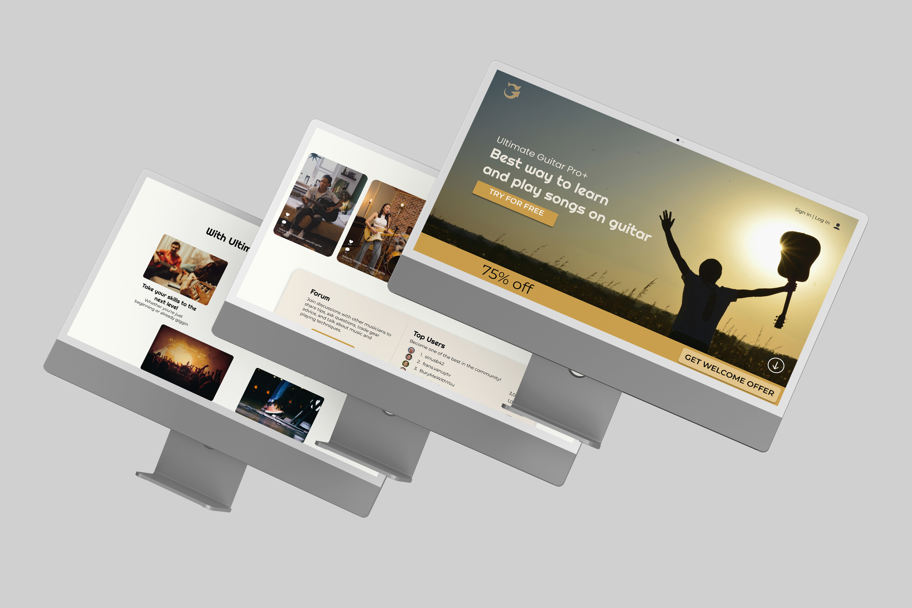
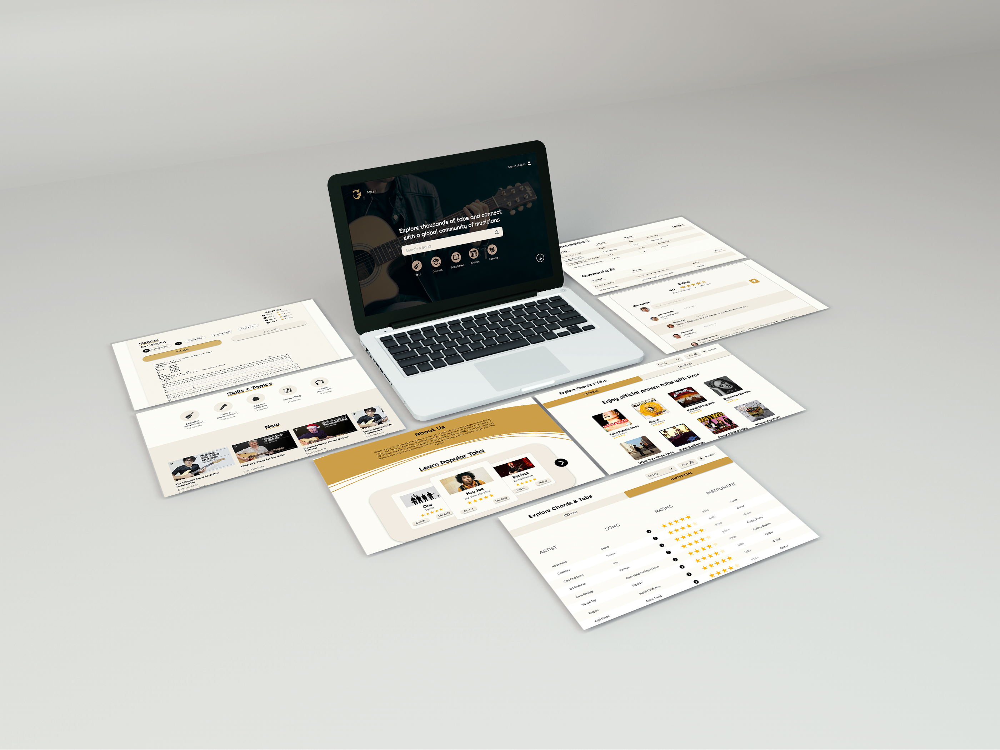

Project
Ultimate Guitar Tabs 🎸
UX research & interface redesign



Overview
About this project
Ultimate Guitar Tabs Redesign is a UX/UI academic project focused on redesigning a music platform used to find guitar tabs, chords, and tutorials. The goal was to improve usability by simplifying navigation, enhancing search accuracy, and creating a more consistent and approachable experience for beginners, intermediate, and professional musicians.
This project examined how content-heavy websites can better support users through clear structure and user-centered design. I contributed to user interviews, persona creation, and journey mapping to identify key pain points such as cluttered layouts, ineffective search, and lack of guidance for new users. The final high-fidelity prototype delivers a cleaner interface with improved navigation flow, standardized typography, and more intuitive search interactions. Usability testing showed increased clarity and ease of use, reinforcing how thoughtful UX decisions can reduce friction and create more accessible learning environments in today’s digital landscape.
Role
My Role
UX/UI Designer: user research, personas, wireframing, prototyping, and usability testing. Focused on research-driven UX decisions and iterative testing.
Software
Software Used